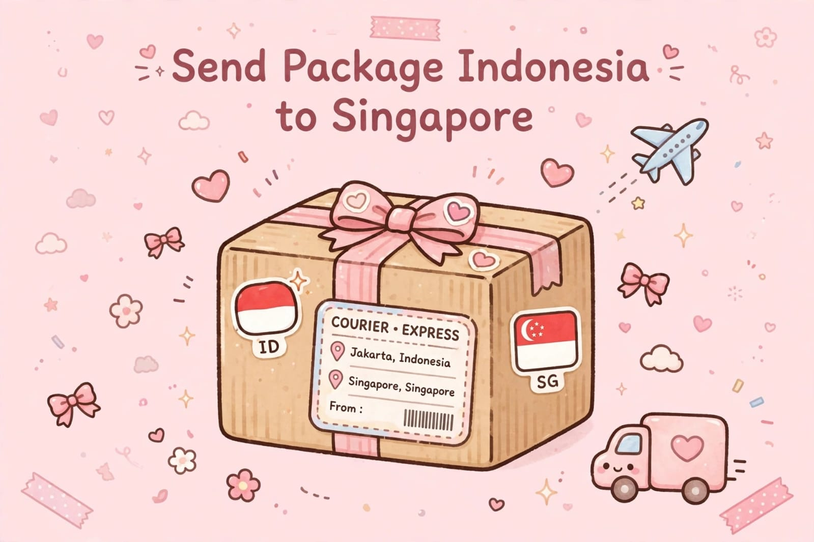

Indonesia to Singapore Shipping: International Courier Service for Parcels and Goods

Looking for a reliable way to send a parcel from Indonesia to Singapore? Whether you are an individual, an online seller, a small business owner, or a company sending products to a customer or business partner, choosing the right international courier service is an important step.
Indonesia to Singapore shipping may be used for eligible documents, clothing, fashion accessories, online shopping orders, business samples, spare parts, and many other types of goods. The available shipping options, delivery estimates, and import requirements depend on the shipment details and the courier service selected.
This guide explains what to prepare before shipping, which types of goods may be eligible, how to reduce packing problems, and what to ask a courier before sending an international parcel to Singapore.
Need Help Sending a Parcel to Singapore?
Contact Lion Parcel Bandung POS101 to ask about international shipping availability, eligible goods, estimated delivery time, and shipping costs. Please confirm the available service before preparing your shipment.
💬 Chat on WhatsApp: 0851-8309-04861. Indonesia to Singapore Courier Service: What Can You Send?
International parcel delivery can support personal shipments and business needs. However, not every item is accepted by every courier or international service. The contents must be declared accurately and comply with the carrier's rules, export regulations, and Singapore import requirements.
Common Types of Goods to Ask About
- Documents: Business papers, letters, and other eligible documents that need to be delivered internationally.
- Clothing and fashion: Shirts, trousers, scarves, modest fashion, and other eligible textile products.
- Fashion accessories: Bags, non-restricted accessories, and eligible fashion items.
- Online shopping orders: Eligible products sold by Indonesian online stores to customers in Singapore.
- Business samples: Product samples and merchandise intended for business evaluation, subject to applicable requirements.
- Spare parts: Certain machine components and other eligible parts, depending on their materials, dimensions, and contents.
- Household products: Non-restricted household goods that meet the carrier's packaging and shipping rules.
- Crafts and gifts: Eligible handicrafts, souvenirs, and personal gifts with accurate item descriptions and declared values.
This list is for general guidance only and does not guarantee acceptance. Before shipping cosmetics, food, supplements, liquids, electronics, batteries, branded goods, valuable items, or unusually large packages, ask the courier whether the exact product is permitted and what documents are required.
2. Shipping from Bandung to Singapore
If you are located in Bandung, Rancaekek, Cicalengka, or elsewhere in Bandung Regency, you can ask a local shipping agent about the available international delivery options. Confirm whether your parcel can be processed through the requested service and whether a drop-off or pickup arrangement is available for your location.
When requesting a quotation for Bandung to Singapore shipping, provide the parcel's origin, full destination address, postal code, package dimensions, actual weight, item description, and intended shipping date. These details help the courier assess the available service and calculate the applicable charge.
Lion Parcel Bandung POS101 is located in the Rancaekek area of Bandung Regency, West Java. Contact the agent to confirm whether the international service you need is currently available for your shipment.
📍 Lion Parcel Bandung POS101 Nanjungmekar
Jl. Raya Barat Cicalengka RT 1 RW 1, Nanjung Mekar, Rancaekek, Bandung Regency, West Java, Indonesia.
3. International Shipping to Singapore for Online Sellers
Singapore is an important regional market for many businesses. Indonesian online sellers and small businesses may need to send customer orders, product samples, accessories, clothing, crafts, and other eligible merchandise across the border.
Before sending an order, make sure the product description, quantity, declared value, recipient details, and supporting documents are accurate. Commercial shipments may require additional paperwork depending on the goods, their value, and the applicable customs rules.
- Check the recipient's address: Include the recipient's full name, street address, Singapore postal code, and a reachable telephone number where required.
- Describe the contents clearly: Avoid vague descriptions such as "stuff" or "gift items" when a more precise description is required.
- Keep transaction records: Retain invoices or other supporting documents when relevant to the shipment.
- Confirm import requirements: Some goods may need permits, declarations, or additional checks before entering Singapore.
4. How Much Does It Cost to Ship a Parcel to Singapore?
The cost of shipping from Indonesia to Singapore depends on the courier service, shipment weight, package dimensions, destination, type of goods, and any additional services or handling requirements.
International courier charges may be based on actual weight or volumetric weight, according to the service's pricing rules. A large, lightweight box may therefore be charged differently from a compact parcel with the same actual weight.
To request an accurate shipping quotation, prepare the following information:
- Pickup or drop-off city in Indonesia.
- Singapore destination address and postal code.
- Actual parcel weight in kilograms.
- Package length, width, and height.
- Detailed description and value of the goods.
- Preferred delivery timeframe, if any.
There is no single price that applies to every parcel. Contact the courier or shipping agent for the current rate and confirm whether duties, taxes, remote-area charges, or other fees may apply.
5. How Long Does Shipping from Indonesia to Singapore Take?
Delivery time depends on the selected service, the date and time the parcel is accepted, the origin and destination, customs clearance, public holidays, and operational conditions. Some services may offer faster delivery options than others, but a specific arrival date should not be assumed until the courier confirms the available service and estimated transit time.
If your parcel is urgent, tell the courier your required delivery date before paying for the shipment. Ask whether the requested deadline is achievable and whether the estimate includes customs processing and delivery to the recipient's address.
Customs inspections or incomplete paperwork can delay international shipments. Accurate declarations and complete recipient information can help reduce avoidable processing problems, although they cannot guarantee a particular delivery date.
6. How to Pack Goods for International Parcel Delivery
Good packaging helps protect items during sorting, handling, and transportation. Choose packaging that fits the contents and can withstand normal handling throughout the shipping journey.
- Choose a suitable box: Use a strong box or approved packaging appropriate for the weight and fragility of the item.
- Protect fragile contents: Use suitable cushioning material and prevent items from moving freely inside the package.
- Seal the package securely: Close openings properly using suitable packing tape.
- Label the shipment clearly: Check the sender's and recipient's details before handing over the parcel.
- Declare the contents accurately: Provide the required item descriptions and values.
- Check restricted items: Do not send prohibited goods or conceal restricted contents inside an ordinary parcel.
7. Restricted Goods and Singapore Customs Requirements
Not all products can be transported internationally by standard courier. Certain items may be prohibited, restricted, subject to special handling, or accepted only with specific documentation. Rules can differ according to the product and the selected shipping service.
Before booking, specifically ask about perfumes, aerosols, flammable materials, liquids, batteries, electronic devices, medicines, food, cosmetics, supplements, plants, animal products, valuable items, and branded goods. Do not assume these items are accepted simply because they can be purchased in Indonesia or Singapore.
The sender is responsible for providing truthful shipment information and the documents required for the goods. Check the latest guidance from the courier and the relevant Singapore authorities before sending regulated or commercial products.
8. How to Arrange Indonesia to Singapore Shipping
Follow these steps to prepare your international parcel:
- Contact the shipping agent and explain what you want to send.
- Provide the parcel's weight, dimensions, value, and contents.
- Confirm that the goods are accepted for the intended destination.
- Ask about the current shipping rate and estimated delivery time.
- Prepare the packaging and any required customs documents.
- Check the recipient's full address and Singapore postal code.
- Keep the shipment receipt and tracking number after dispatch.
Ask About International Parcel Delivery
Need to send eligible goods from Indonesia to Singapore? Contact Lion Parcel Bandung POS101 to ask about current service availability, shipping requirements, estimated delivery time, and pricing.
💬 Contact Us on WhatsAppConclusion: Find the Right Shipping Option to Singapore
Sending parcels from Indonesia to Singapore can support personal needs, online shopping orders, and business shipments. Whether you are sending documents, clothing, accessories, product samples, spare parts, or other eligible goods, it is important to confirm service availability, packaging requirements, customs documentation, shipping charges, and delivery estimates before dispatch.
If you are shipping from Bandung, Rancaekek, or Cicalengka, contact Lion Parcel Bandung POS101 to ask about the international service options available for your particular shipment. Providing complete parcel details will help the agent check the next steps.
Agent: Lion Parcel Bandung POS101 Nanjungmekar Rancaekek
Operating Hours: Monday–Sunday, 08:00–20:00 WIB
Address: Jl. Raya Barat Cicalengka RT 1 RW 1, Nanjung Mekar, Rancaekek, Bandung Regency, West Java, Indonesia
WhatsApp: +62 851-8309-0486